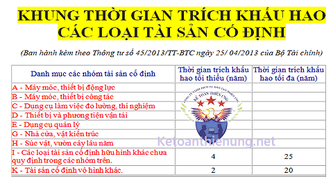

Bảng khung khấu hao Tài sản cố định mới nhất Thông tư 45/2013/TT-BTC. Quy định thời gian trích khấu hao TSCĐ trong Doanh nghiệp theo khung thời gian khấu hao TSCĐ cụ thể như sau:
Theo quy định tại Thông tư 45/2013/TT-BTC ngày 25 tháng 4 năm 2013 của Bộ tài chính:
Khấu hao tài sản cố định: là việc tính toán và phân bổ một cách có hệ thống nguyên giá của tài sản cố định vào chi phí sản xuất, kinh doanh trong thời gian trích khấu hao của tài sản cố định.
Thời gian trích khấu hao TSCĐ: là thời gian cần thiết mà doanh nghiệp thực hiện việc trích khấu hao TSCĐ để thu hồi vốn đầu tư TSCĐ.
1. Tất cả TSCĐ hiện có của doanh nghiệp đều phải trích khấu hao, trừ những TSCĐ sau đây:
- TSCĐ đã khấu hao hết giá trị nhưng vẫn đang sử dụng vào hoạt động sản xuất kinh doanh.
- TSCĐ khấu hao chưa hết bị mất.
- TSCĐ khác do doanh nghiệp quản lý mà không thuộc quyền sở hữu của doanh nghiệp (trừ TSCĐ thuê tài chính).
- TSCĐ không được quản lý, theo dõi, hạch toán trong sổ sách kế toán của doanh nghiệp.
- TSCĐ sử dụng trong các hoạt động phúc lợi phục vụ người lao động của doanh nghiệp (trừ các TSCĐ phục vụ cho người lao động làm việc tại doanh nghiệp như: nhà nghỉ giữa ca, nhà ăn giữa ca, nhà thay quần áo, nhà vệ sinh, bể chứa nước sạch, nhà để xe, phòng hoặc trạm y tế để khám chữa bệnh, xe đưa đón người lao động, cơ sở đào tạo, dạy nghề, nhà ở cho người lao động do doanh nghiệp đầu tư xây dựng).
- TSCĐ từ nguồn viện trợ không hoàn lại sau khi được cơ quan có thẩm quyền bàn giao cho doanh nghiệp để phục vụ công tác nghiên cứu khoa học.
- TSCĐ vô hình là quyền sử dụng đất lâu dài có thu tiền sử dụng đất hoặc nhận chuyển nhượng quyền sử dụng đất lâu dài hợp pháp.
a. Đối với tài sản cố định còn mới (chưa qua sử dụng), doanh nghiệp phải căn cứ vào khung thời gian trích khấu hao tài sản cố định quy định tại Phụ lục 1 ban hành kèm theo Thông tư 45 để xác định thời gian trích khấu hao của tài sản cố định.
b. Đối với tài sản cố định đã qua sử dụng, thời gian trích khấu hao của tài sản cố định được xác định như sau:
Trong đó: Giá trị hợp lý của TSCĐ là giá mua hoặc trao đổi thực tế (trong trường hợp mua bán, trao đổi), giá trị còn lại của TSCĐ hoặc giá trị theo đánh giá của tổ chức có chức năng thẩm định giá (trong trường hợp được cho, được biếu, được tặng, được cấp, được điều chuyển đến ) và các trường hợp khác.
- Doanh nghiệp tự xác định thời gian trích khấu hao của tài sản cố định vô hình nhưng tối đa không quá 20 năm.
- Đối với TSCĐ vô hình là giá trị quyền sử dụng đất có thời hạn, quyền sử dụng đất thuê, thời gian trích khấu hao là thời gian được phép sử dụng đất của doanh nghiệp.
- Đối với TSCĐ vô hình là quyền tác giả, quyền sở hữu trí tuệ, quyền đối với giống cây trồng, thì thời gian trích khấu hao là thời hạn bảo hộ được ghi trên văn bằng bảo hộ theo quy định (không được tính thời hạn bảo hộ được gia hạn thêm)
Khấu hao tài sản cố định: là việc tính toán và phân bổ một cách có hệ thống nguyên giá của tài sản cố định vào chi phí sản xuất, kinh doanh trong thời gian trích khấu hao của tài sản cố định.
Thời gian trích khấu hao TSCĐ: là thời gian cần thiết mà doanh nghiệp thực hiện việc trích khấu hao TSCĐ để thu hồi vốn đầu tư TSCĐ.
1. Tất cả TSCĐ hiện có của doanh nghiệp đều phải trích khấu hao, trừ những TSCĐ sau đây:
- TSCĐ đã khấu hao hết giá trị nhưng vẫn đang sử dụng vào hoạt động sản xuất kinh doanh.
- TSCĐ khấu hao chưa hết bị mất.
- TSCĐ khác do doanh nghiệp quản lý mà không thuộc quyền sở hữu của doanh nghiệp (trừ TSCĐ thuê tài chính).
- TSCĐ không được quản lý, theo dõi, hạch toán trong sổ sách kế toán của doanh nghiệp.
- TSCĐ sử dụng trong các hoạt động phúc lợi phục vụ người lao động của doanh nghiệp (trừ các TSCĐ phục vụ cho người lao động làm việc tại doanh nghiệp như: nhà nghỉ giữa ca, nhà ăn giữa ca, nhà thay quần áo, nhà vệ sinh, bể chứa nước sạch, nhà để xe, phòng hoặc trạm y tế để khám chữa bệnh, xe đưa đón người lao động, cơ sở đào tạo, dạy nghề, nhà ở cho người lao động do doanh nghiệp đầu tư xây dựng).
- TSCĐ từ nguồn viện trợ không hoàn lại sau khi được cơ quan có thẩm quyền bàn giao cho doanh nghiệp để phục vụ công tác nghiên cứu khoa học.
- TSCĐ vô hình là quyền sử dụng đất lâu dài có thu tiền sử dụng đất hoặc nhận chuyển nhượng quyền sử dụng đất lâu dài hợp pháp.
---------------------------------------------------------------------------
2. Cách xác định thời gian trích khấu hao của TSCĐ hữu hình:a. Đối với tài sản cố định còn mới (chưa qua sử dụng), doanh nghiệp phải căn cứ vào khung thời gian trích khấu hao tài sản cố định quy định tại Phụ lục 1 ban hành kèm theo Thông tư 45 để xác định thời gian trích khấu hao của tài sản cố định.
Xem thêm: Cách hạch toán trích khấu hao TSCĐ
b. Đối với tài sản cố định đã qua sử dụng, thời gian trích khấu hao của tài sản cố định được xác định như sau:
| Thời gian trích khấu hao của TSCĐ |
= |
Giá trị hợp lý của TSCĐ |
x |
Thời gian trích khấu hao của TSCĐ mới cùng loại xác định theo Phụ lục 1 (ban hành kèm theo Thông tư này) |
| Giá bán của TSCĐ cùng loại mới 100% (hoặc của TSCĐ tương đương trên thị trường) |
Trong đó: Giá trị hợp lý của TSCĐ là giá mua hoặc trao đổi thực tế (trong trường hợp mua bán, trao đổi), giá trị còn lại của TSCĐ hoặc giá trị theo đánh giá của tổ chức có chức năng thẩm định giá (trong trường hợp được cho, được biếu, được tặng, được cấp, được điều chuyển đến ) và các trường hợp khác.
Xem thêm: Cách tính khấu hao TSCĐ đã qua sử dụng
------------------------------------------------------------------------
3. Cách xác định thời gian trích khấu hao của TSCĐ vô hình:- Doanh nghiệp tự xác định thời gian trích khấu hao của tài sản cố định vô hình nhưng tối đa không quá 20 năm.
- Đối với TSCĐ vô hình là giá trị quyền sử dụng đất có thời hạn, quyền sử dụng đất thuê, thời gian trích khấu hao là thời gian được phép sử dụng đất của doanh nghiệp.
- Đối với TSCĐ vô hình là quyền tác giả, quyền sở hữu trí tuệ, quyền đối với giống cây trồng, thì thời gian trích khấu hao là thời hạn bảo hộ được ghi trên văn bằng bảo hộ theo quy định (không được tính thời hạn bảo hộ được gia hạn thêm)
-----------------------------------------------------------------------
PHỤ LỤC I
KHUNG THỜI GIAN TRÍCH KHẤU HAO CÁC LOẠI TÀI SẢN CỐ ĐỊNH
(Ban hành kèm theo Thông tư số 45/2013/TT-BTC ngày 25/ 04/2013 của Bộ Tài chính)
| Danh mục các nhóm tài sản cố định | Thời gian trích khấu hao tối thiểu (năm) | Thời gian trích khấu hao tối đa (năm) |
A - Máy móc, thiết bị động lực |
||
| 1. Máy phát động lực | 8 | 15 |
| 2. Máy phát điện, thuỷ điện, nhiệt điện, phong điện, hỗn hợp khí. | 7 | 20 |
| 3. Máy biến áp và thiết bị nguồn điện | 7 | 15 |
| 4. Máy móc, thiết bị động lực khác | 6 | 15 |
|
B - Máy móc, thiết bị công tác
|
||
| 1. Máy công cụ | 7 | 15 |
| 2. Máy móc thiết bị dùng trong ngành khai khoáng | 5 | 15 |
| 3. Máy kéo | 6 | 15 |
| 4. Máy dùng cho nông, lâm nghiệp | 6 | 15 |
| 5. Máy bơm nước và xăng dầu | 6 | 15 |
| 6. Thiết bị luyện kim, gia công bề mặt chống gỉ và ăn mòn kim loại | 7 | 15 |
| 7. Thiết bị chuyên dùng sản xuất các loại hoá chất | 6 | 15 |
| 8. Máy móc, thiết bị chuyên dùng sản xuất vật liệu xây dựng, đồ sành sứ, thuỷ tinh | 10 | 20 |
| 9. Thiết bị chuyên dùng sản xuất các linh kiện và điện tử, quang học, cơ khí chính xác | 5 | 15 |
| 10. Máy móc, thiết bị dùng trong các ngành sản xuất da, in văn phòng phẩm và văn hoá phẩm | 7 | 15 |
| 11. Máy móc, thiết bị dùng trong ngành dệt | 10 | 15 |
| 12. Máy móc, thiết bị dùng trong ngành may mặc | 5 | 10 |
| 13. Máy móc, thiết bị dùng trong ngành giấy | 5 | 15 |
| 14. Máy móc, thiết bị sản xuất, chế biến lương thực, thực phẩm | 7 | 15 |
| 15. Máy móc, thiết bị điện ảnh, y tế | 6 | 15 |
| 16. Máy móc, thiết bị viễn thông, thông tin, điện tử, tin học và truyền hình | 3 | 15 |
| 17. Máy móc, thiết bị sản xuất dược phẩm | 6 | 10 |
| 18. Máy móc, thiết bị công tác khác | 5 | 12 |
| 19. Máy móc, thiết bị dùng trong ngành lọc hoá dầu | 10 | 20 |
| 20. Máy móc, thiết bị dùng trong thăm dò khai thác dầu khí. | 7 | 10 |
| 21. Máy móc thiết bị xây dựng | 8 | 15 |
| 22. Cần cẩu | 10 | 20 |
|
C - Dụng cụ làm việc đo lường, thí nghiệm
|
||
| 1. Thiết bị đo lường, thử nghiệm các đại lượng cơ học, âm học và nhiệt học | 5 | 10 |
| 2. Thiết bị quang học và quang phổ | 6 | 10 |
| 3. Thiết bị điện và điện tử | 5 | 10 |
| 4. Thiết bị đo và phân tích lý hoá | 6 | 10 |
| 5. Thiết bị và dụng cụ đo phóng xạ | 6 | 10 |
| 6. Thiết bị chuyên ngành đặc biệt | 5 | 10 |
| 7. Các thiết bị đo lường, thí nghiệm khác | 6 | 10 |
| 8. Khuôn mẫu dùng trong công nghiệp đúc | 2 | 5 |
|
D - Thiết bị và phương tiện vận tải
|
||
| 1. Phương tiện vận tải đường bộ | 6 | 10 |
| 2. Phương tiện vận tải đường sắt | 7 | 15 |
| 3. Phương tiện vận tải đường thuỷ | 7 | 15 |
| 4. Phương tiện vận tải đường không | 8 | 20 |
| 5. Thiết bị vận chuyển đường ống | 10 | 30 |
| 6. Phương tiện bốc dỡ, nâng hàng | 6 | 10 |
| 7. Thiết bị và phương tiện vận tải khác | 6 | 10 |
|
E - Dụng cụ quản lý
|
||
| 1. Thiết bị tính toán, đo lường | 5 | 8 |
| 2. Máy móc, thiết bị thông tin, điện tử và phần mềm tin học phục vụ quản lý | 3 | 8 |
| 3. Phương tiện và dụng cụ quản lý khác | 5 | 10 |
|
G - Nhà cửa, vật kiến trúc
|
||
| 1. Nhà cửa loại kiên cố. | 25 | 50 |
| 2. Nhà nghỉ giữa ca, nhà ăn giữa ca, nhà vệ sinh, nhà thay quần áo, nhà để xe... | 6 | 25 |
| 3. Nhà cửa khác. | 6 | 25 |
| 4. Kho chứa, bể chứa; cầu, đường, đường băng sân bay; bãi đỗ, sân phơi... | 5 | 20 |
| 5. Kè, đập, cống, kênh, mương máng. | 6 | 30 |
| 6. Bến cảng, ụ triền đà... | 10 | 40 |
| 7. Các vật kiến trúc khác | 5 | 10 |
|
H - Súc vật, vườn cây lâu năm
|
||
| 1. Các loại súc vật | 4 | 15 |
| 2. Vườn cây công nghiệp, vườn cây ăn quả, vườn cây lâu năm. | 6 | 40 |
| 3. Thảm cỏ, thảm cây xanh. | 2 | 8 |
|
I - Các loại tài sản cố định hữu hình khác chưa quy định trong các nhóm trên.
|
4 | 25 |
|
K - Tài sản cố định vô hình khác. |
2 | 20 |
----------------------------------------------------------------------------------
Những chú ý cần biết:
- Doanh nghiệp tự quyết định phương pháp trích khấu hao, thời gian trích khấu hao TSCĐ theo quy định tại Thông tư này và thông báo với cơ quan thuế trực tiếp quản lý trước khi bắt đầu thực hiện.
- Phương pháp trích khấu hao áp dụng cho từng TSCĐ mà doanh nghiệp đã lựa chọn và thông báo cho cơ quan thuế trực tiếp quản lý phải được thực hiện nhất quán trong suốt quá trình sử dụng TSCĐ. Trường hợp đặc biệt cần thay đổi phương pháp trích khấu hao, doanh nghiệp phải giải trình rõ sự thay đổi về cách thức sử dụng TSCĐ để đem lại lợi ích kinh tế cho doanh nghiệp. Mỗi tài sản cố định chỉ được phép thay đổi một lần phương pháp trích khấu hao trong quá trình sử dụng và phải thông báo bằng văn bản cho cơ quan thuế quản lý trực tiếp.
- Doanh nghiệp hoạt động có hiệu quả kinh tế cao được khấu hao nhanh nhưng tối đa không quá 2 lần mức khấu hao xác định theo phương pháp đường thẳng để nhanh chóng đổi mới công nghệ. Tài sản cố định tham gia vào hoạt động kinh doanh được trích khấu hao nhanh là máy móc, thiết bị; dụng cụ làm việc đo lường, thí nghiệm; thiết bị và phương tiện vận tải; dụng cụ quản lý; súc vật, vườn cây lâu năm. Khi thực hiện trích khấu hao nhanh, doanh nghiệp phải đảm bảo kinh doanh có lãi. Trường hợp doanh nghiệp trích khấu hao nhanh vượt 2 lần mức quy định tại khung thời gian sử dụng tài sản cố định nêu tại Phụ lục 1 kèm theo Thông tư này, thì phần trích vượt mức khấu hao nhanh (quá 2 lần) không được tính vào chi phí hợp lý khi tính thuế thu nhập trong kỳ.
Xem thêm: Quy định về trích khấu hao nhanh
-----------------------------------------------------
Sau khi đã xác định được thời gian trích khấu hao TSCĐ của công ty mình, các bạn tiến hành tính trích khấu, chi tiết xem tại đây:
Chúc các bạn làm tốt công việc kế toán!
__________________________________________________
